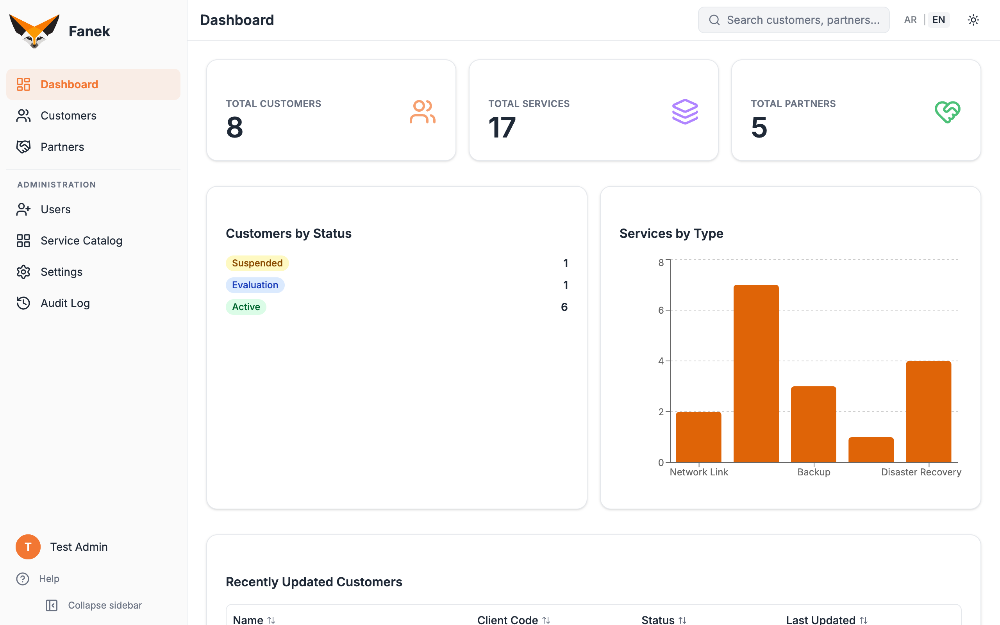
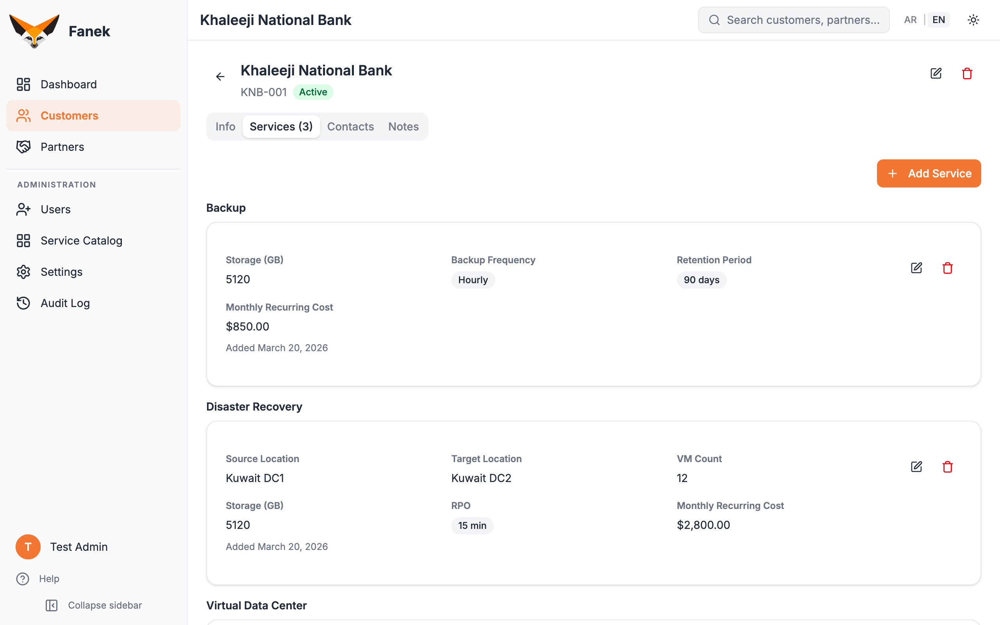
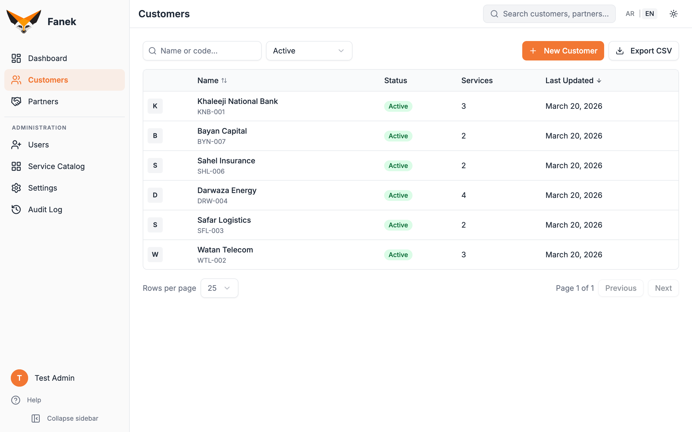
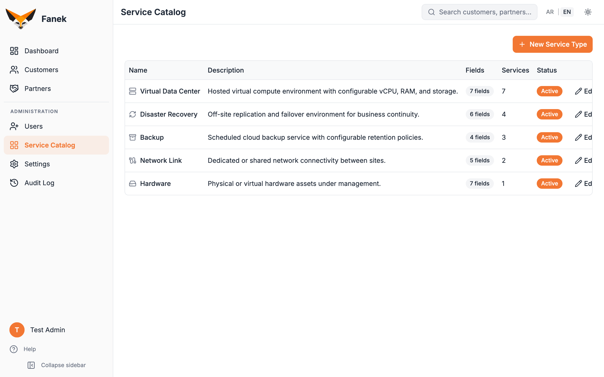

Dynamic Service Catalog
Admins define service types with custom field schemas. Service records store values as structured data — no code changes.
Open-source · Self-hosted · Made in Kuwait 🇰🇼
Fanek is a clean, searchable record book for service providers — a living inventory of who-has-what. Not a CRM. Not a helpdesk. Not a billing system.
MIT licensed · Docker-ready · English & Arabic (RTL)
The origin story
If you run an IT, cloud, telecom, or managed-services company, you have clients, and each client subscribes to some combination of your services. Your provisioning team sets them up. Your support team looks them up ten times a day. Your operations team updates them as things change.
Everyone needs one place to answer a single question: "What does this client have?"
We tried the obvious tools and every one was the wrong shape. A spreadsheet goes stale the moment two people touch it. A full CRM buries the answer under sales pipelines and marketing funnels you will never use. A helpdesk tracks tickets, not inventory. A billing system tracks invoices, not what's actually deployed. And there was no open-source tool built for exactly this job.
So we built Fanek. A focused, self-hosted record of your clients and their services. Nothing more, nothing less.
Features
Admins define service types with custom field schemas. Service records store values as structured data — no code changes.
Guided first-run flow: create the admin, set org details, and pick a starter template — Cloud, Telecom, MSP, or Blank.
Three clear roles: Admin (full access), Editor (create & edit), and Viewer (read-only). Simple to reason about.
Spotlight-style command palette (Cmd+K) across customers, partners, and services. Find anything in a keystroke.
Multiple contacts per customer or partner, each with multiple emails and phone numbers. Inline editing throughout.
Structured logs for every data change, with user attribution and JSON detail. Know who changed what, and when.
Full bilingual UI with right-to-left support. Users switch language from the navigation bar at any time.
Export customer and partner data for reporting and integrations. Your data stays portable, always.
Enable Google or other OAuth providers from Admin Settings — no file edits, no redeploys.
Ship and run with a single docker compose up. Secrets auto-generated, database migrated automatically.
Toggle between a dark (default) and light theme. Comfortable in any environment, day or night.
Server-side helpers like reset-password and list-users for when you need them most.
A look inside




Quick Start
With Docker installed, clone the repo and bring it up. Secrets are auto-generated and the database is created and migrated for you.
# 1. Clone the repository
git clone https://github.com/mulaifi/fanek.git
# 2. Enter the project
cd fanek
# 3. Start it
docker compose up -dThen open http://localhost:8080 and follow the setup wizard. That's it.
Self-host Fanek and give your team one source of truth. Free and open source under the MIT license.